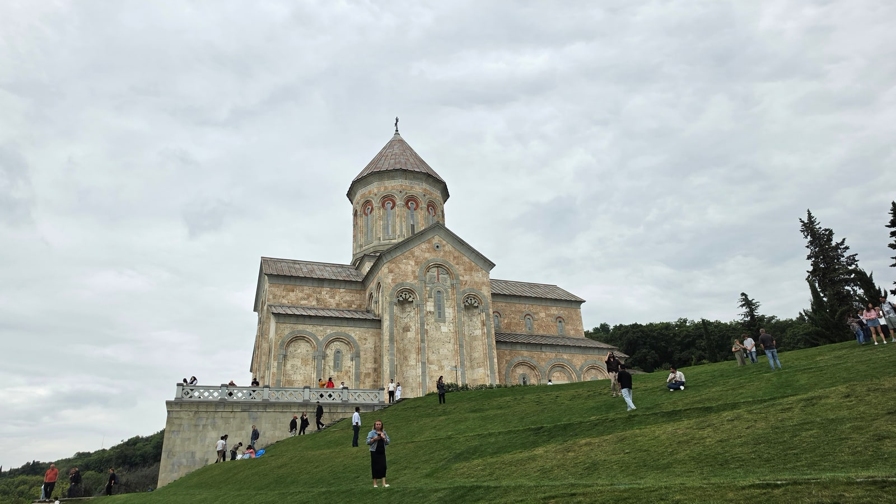
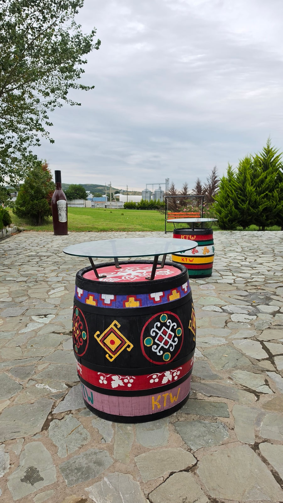
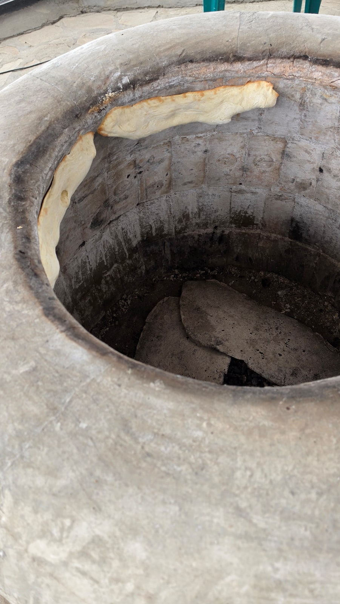
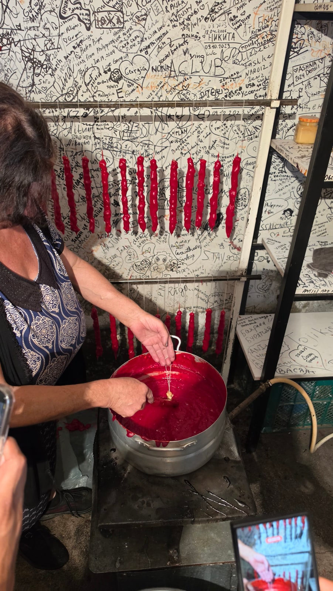
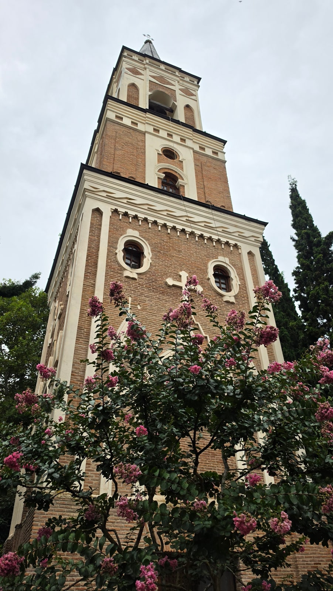
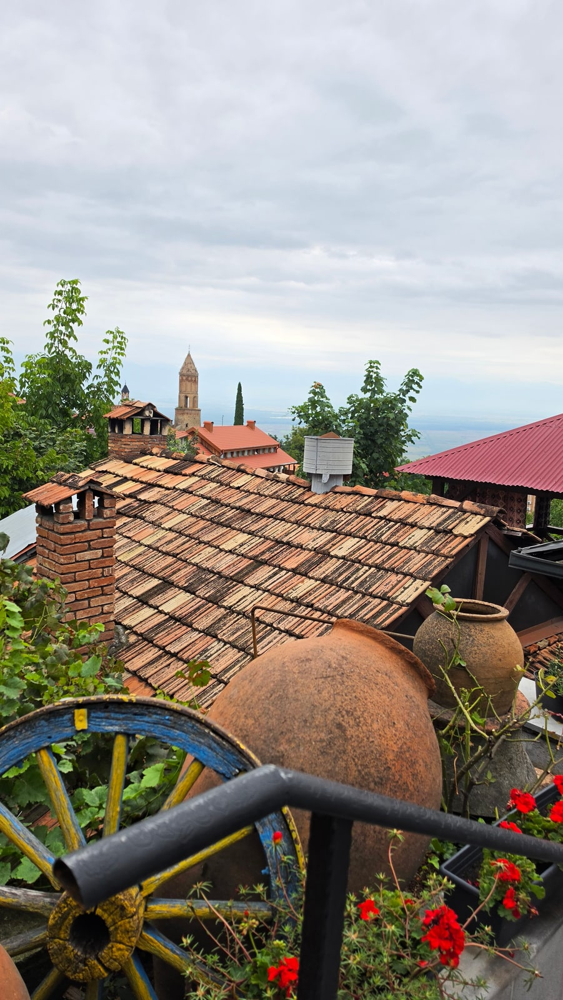
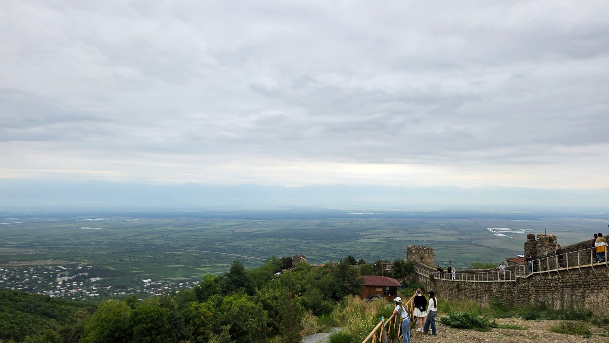
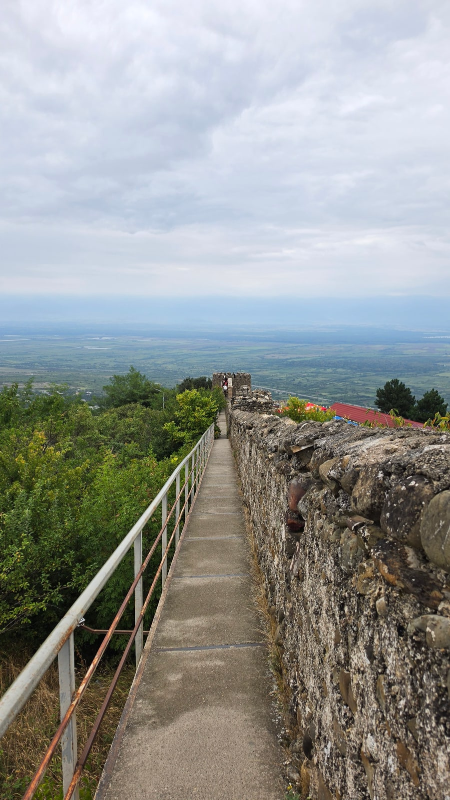

<meta charset="utf-8">
<title>카헤티 와인 투어 — KTW 와이너리·보드베·시그나기 — 나의 투자 그리고 행복한 여행</title>
<meta name="description" content="카헤티 와인 투어(22,400원) 실제 동선: KTW 와이너리 시음과 크베브리, 추르츠헬라, 보드베 수도원, 시그나기 성벽 산책.">
<meta name="viewport" content="width=device-width, initial-scale=1">
<link rel="canonical" href="https://danielmoon82.github.io/moon/posts/kakheti-wine-tour-2026-09-14.html">
<link rel="preconnect" href="https://fonts.googleapis.com">
<link rel="preconnect" href="https://fonts.gstatic.com" crossorigin>
<link rel="stylesheet" href="https://fonts.googleapis.com/css2?family=Hahmlet:wght@400;600;800&family=IBM+Plex+Mono:wght@400;500&family=IBM+Plex+Sans+KR:wght@300;400;500;600&display=swap">

<style>
  :root{
    --paper:#F2EEE6;--surface:#FAF8F3;--surface-2:#E7E1D5;
    --ink:#191510;--ink-2:#4A4235;--ink-3:#7D7364;
    --line:#D6CEBF;--line-soft:#E4DDD0;--accent:#B06A15;--accent-bright:#C2761A;
    --up:#E5484D;--down:#3B82F6;
    --f-display:"Hahmlet",'Nanum Myeongjo',"Apple SD Gothic Neo",serif;
    --f-body:"IBM Plex Sans KR","Apple SD Gothic Neo","Malgun Gothic",sans-serif;
    --f-mono:"IBM Plex Mono","SFMono-Regular",Consolas,monospace;
    --pad:clamp(20px,5vw,64px);
  }
  @media (prefers-color-scheme:dark){
    :root:not([data-theme="light"]){
      --paper:#0B1120;--surface:#121A2C;--surface-2:#1A2439;
      --ink:#E9EEF7;--ink-2:#A9B5C9;--ink-3:#72809A;
      --line:#26314A;--line-soft:#1D2739;--accent:#E8A33D;--accent-bright:#F0B45C;
    }
  }
  *{box-sizing:border-box;}
  body{margin:0;background:var(--paper);color:var(--ink);font-family:var(--f-body);
    font-weight:300;font-size:1rem;line-height:1.75;-webkit-font-smoothing:antialiased;}
  a{color:inherit;}
  img{max-width:100%;height:auto;}
  .wrap{max-width:760px;margin:0 auto;padding-inline:var(--pad);}
  .nav{position:sticky;top:0;z-index:20;background:color-mix(in srgb,var(--paper) 88%,transparent);
    backdrop-filter:saturate(180%) blur(12px);border-bottom:1px solid var(--line);}
  .nav-in{display:flex;align-items:center;justify-content:space-between;height:58px;}
  .brand{font-family:var(--f-display);font-weight:600;font-size:1rem;letter-spacing:-.02em;text-decoration:none;}
  .back{font-family:var(--f-mono);font-size:.72rem;color:var(--ink-3);text-decoration:none;}
  .article{padding-block:clamp(40px,7vw,72px) clamp(56px,9vw,96px);}
  .eyebrow{font-family:var(--f-mono);font-size:.68rem;letter-spacing:.16em;text-transform:uppercase;
    color:var(--accent);margin:0 0 14px;}
  h1{font-family:var(--f-display);font-weight:800;font-size:clamp(1.6rem,4.4vw,2.3rem);
    line-height:1.3;letter-spacing:-.03em;margin:0 0 16px;}
  .byline{font-family:var(--f-mono);font-size:.72rem;color:var(--ink-3);
    padding-bottom:24px;border-bottom:1px solid var(--line);margin-bottom:32px;}
  h2{font-family:var(--f-display);font-weight:600;font-size:1.25rem;letter-spacing:-.02em;margin:42px 0 14px;}
  h3{font-family:var(--f-display);font-weight:600;font-size:1.05rem;letter-spacing:-.02em;
    margin:30px 0 10px;padding-top:14px;border-top:1px solid var(--line-soft);}
  h3 .code{font-family:var(--f-mono);font-size:.7rem;font-weight:400;color:var(--ink-3);margin-left:6px;}
  p{margin:0 0 18px;color:var(--ink-2);}
  ul.checks{margin:0 0 18px;padding-left:20px;color:var(--ink-2);}
  ul.checks li{margin-bottom:8px;font-size:.94rem;}
  table{width:100%;border-collapse:collapse;font-size:.88rem;margin-bottom:8px;}
  th{font-family:var(--f-mono);font-size:.66rem;letter-spacing:.06em;text-transform:uppercase;
    color:var(--ink-3);text-align:right;padding:8px 6px;border-bottom:1px solid var(--line);}
  th:first-child{text-align:left;}
  td{padding:10px 6px;border-bottom:1px solid var(--line-soft);color:var(--ink-2);}
  td.num{font-family:var(--f-mono);text-align:right;font-variant-numeric:tabular-nums;}
  td.up{color:var(--up);} td.down{color:var(--down);}
  .scroll{overflow-x:auto;}
  figure{margin:22px 0;}
  figure img{display:block;border-radius:3px;background:var(--surface-2);}
  figcaption{margin-top:8px;font-family:var(--f-mono);font-size:.68rem;color:var(--ink-3);text-align:center;}
  .note{margin-top:34px;padding:16px 18px;border-left:3px solid var(--accent);
    background:var(--surface);border-radius:0 3px 3px 0;}
  .note p{margin:0;font-size:.85rem;color:var(--ink-3);}
  .foot{border-top:1px solid var(--line);background:var(--surface);padding-block:30px 38px;}
  .foot p{margin:0;font-size:.8rem;color:var(--ink-3);}
</style>

<nav class="nav">
  <div class="wrap nav-in">
    <a class="brand" href="../index.html">나의 투자 그리고 행복한 여행</a>
    <a class="back" href="../index.html#stocks">← 시황으로</a>
  </div>
</nav>

<main class="wrap article">
  <p class="eyebrow">Market</p>
  <h1>카헤티 와인 투어 기록 (2026.8.16) — 시각별 동선과 방문지 정보</h1>
  <p class="byline">여행 · 2026-09-14 기준</p>

  <p>한 줄 요약: 클룩 조인 투어(22,400원, 09:00 출발)로 KTW 와이너리(10:12) → 포도밭·추르츠헬라(12:09) → 보드베 수도원(14:01) → 시그나기(15:00~17:13)를 돌았습니다.</p>
  <p>시각은 사진 촬영 시각입니다. 와이너리·마을 정보는 KTW 공식 사이트, 위키백과, 유네스코 자료를 참고했습니다.</p>
  <p>※ 이 글에는 클룩 제휴 링크가 들어 있습니다. 링크를 통해 예약하시면 글쓴이가 일정 수수료를 받을 수 있으며, 예약하시는 가격은 같습니다.</p>
  <figure><figcaption>성녀 니노가 안장된 보드베 수도원 (2026.8.16 14:12 촬영)</figcaption></figure>
  <h2>이날 동선 한눈에 보기</h2>
  <ul class="checks">
    <li>09:00  트빌리시 출발 (예약 시간)</li>
    <li>10:12~10:53  KTW 와이너리 — 양조장, 시음, 크베브리</li>
    <li>12:09~12:13  포도밭 시음, 추르츠헬라 만드는 모습</li>
    <li>14:01~14:21  보드베 수도원</li>
    <li>15:00~15:20  시그나기 — 성문, 지붕 풍경, 알라자니 계곡 전망</li>
    <li>16:40  시그나기 성벽 산책로</li>
    <li>17:00~17:13  시그나기 거리</li>
  </ul>
  <p>점심과 귀환 시각은 기록이 없어 적지 않았습니다. 시그나기에서 마지막 사진이 17시 13분이니, 트빌리시에는 저녁에 도착하는 일정입니다.</p>
  <h2>10:12 KTW 와이너리 — 첫 방문지</h2>
  <figure><figcaption>KTW 와이너리 마당에 놓인 그림 그려진 오크통 (2026.8.16 10:12 촬영)</figcaption></figure>
  <p>KTW(카헤티 전통 와인 양조)는 2001년 파타르제울리 마을에 세워진 와이너리로, 조지아의 큰 와인 생산자 중 하나입니다. 전통 크베브리 양조와 현대식 설비를 함께 씁니다.</p>
  <p>40분가량 머물렀습니다. 10시 32분에는 스테인리스 탱크에서 바로 잔에 받아 맛보는 시음이 있었고, 10시 51분에는 시음실로 옮겼습니다.</p>
  <figure><figcaption>땅에 묻힌 흙 항아리 크베브리를 들여다본 모습 (2026.8.16 10:53 촬영)</figcaption></figure>
  <p>이 사진이 크베브리입니다. 달걀 모양의 커다란 흙 항아리를 땅에 묻고, 그 안에서 포도즙을 껍질·씨와 함께 발효·숙성시킵니다. 이 방식은 2013년 유네스코 인류무형문화유산으로 등재됐습니다.</p>
  <div class="note"><p>크베브리 방식으로 만든 화이트 와인은 껍질과 함께 숙성해서 호박색을 띱니다. 앰버 와인, 오렌지 와인이라고 부르는 것이 이것입니다.</p></div>
  <p>시음한 와인의 종류와 잔 수는 기록해두지 못해서 적지 않았습니다. 투어 상품마다 시음 구성이 다르니 예약할 때 확인하세요.</p>
  <h2>12:09 포도밭과 추르츠헬라</h2>
  <figure><figcaption>견과류를 실에 꿰어 걸쭉한 포도즙에 담그는 추르츠헬라 만들기 (2026.8.16 12:13 촬영)</figcaption></figure>
  <p>다음으로 들른 곳에서 포도밭 사이에서 시음을 하고, 조지아 전통 간식 추르츠헬라를 만드는 모습을 봤습니다. 이곳의 이름은 기록해두지 못했습니다.</p>
  <p>추르츠헬라는 호두나 헤이즐넛을 실에 꿰어 끓인 포도즙에 여러 번 담갔다가 말린 것입니다. 소시지처럼 생겼고, 트빌리시 시장이나 관광지 어디서나 팝니다.</p>
  <h2>14:01 보드베 수도원 — 성녀 니노가 잠든 곳</h2>
  <p>보드베 수도원은 조지아에 기독교를 전한 성녀 니노가 안장된 곳입니다. 9세기에 처음 세워지고 17세기에 다시 지어졌으며, 시그나기에서 2km 떨어져 있습니다.</p>
  <figure><figcaption>보드베 수도원의 종탑 (2026.8.16 14:21 촬영)</figcaption></figure>
  <p>종탑은 1862~1885년에 세워졌습니다. 수도원 안쪽에 잘 가꿔진 정원이 있습니다. 20분 정도 둘러봤습니다.</p>
  <p>수도원이라 노출이 적은 옷차림이 무난합니다. 반바지나 민소매라면 걸칠 것을 하나 챙기세요.</p>
  <h2>15:00 시그나기 — 성벽으로 둘러싸인 언덕 마을</h2>
  <figure><figcaption>시그나기 옛 성벽의 성문 (2026.8.16 15:10 촬영)</figcaption></figure>
  <p>시그나기는 트빌리시에서 약 113km, 해발 약 790m 언덕에 있는 작은 마을입니다. 1762년 에레클레 2세가 요새를 쌓았고, 지금도 성벽과 망루가 마을을 둘러싸고 있습니다.</p>
  <p>'사랑의 도시'라는 별명으로도 알려져 있습니다.</p>
  <figure><figcaption>시그나기의 기와지붕과 오래된 크베브리 (2026.8.16 15:06 촬영)</figcaption></figure>
  <figure><figcaption>시그나기에서 본 알라자니 계곡. 이날은 뿌옇게 흐렸습니다 (2026.8.16 15:20 촬영)</figcaption></figure>
  <p>마을 끝에서 알라자니 계곡이 내려다보입니다. 맑은 날에는 계곡 너머로 코카서스 산맥이 보인다고 하는데, 제가 간 날은 뿌옇게 흐려 산맥은 보이지 않았습니다.</p>
  <figure><figcaption>시그나기 성벽 위를 걷는 길 (2026.8.16 16:40 촬영)</figcaption></figure>
  <p>16시 40분에는 성벽 위 산책로를 걸었습니다. 성벽 일부 구간을 따라 걸을 수 있습니다. 경사와 계단이 있으니 편한 신발이 좋습니다.</p>
  <p>시그나기에서 머문 시간은 사진 기준으로 15시부터 17시 13분까지, 2시간 남짓입니다. 이 투어에서 가장 길게 머문 곳입니다.</p>
  <h2>투어를 고를 때 볼 것</h2>
  <ul class="checks">
    <li>와이너리 이름 — KTW처럼 방문 와이너리가 명시된 상품이 비교하기 편합니다</li>
    <li>시음 포함 여부와 구성 — 상품마다 다릅니다</li>
    <li>시그나기 체류 시간 — 저는 2시간 남짓이었습니다. 이보다 짧으면 성벽까지 걷기 빠듯합니다</li>
    <li>점심 포함 여부 — 상품 설명을 확인하세요</li>
    <li>출발 시간 — 제 투어는 오전 9시였습니다</li>
  </ul>
  <div style="text-align:center;margin:30px 0"><a href="https://affiliate.klook.com/redirect?aid=135164&aff_adid=1430621&k_site=https%3A%2F%2Fwww.klook.com%2Fko%2Factivity%2F141324-kakheti-sighnaghi-city-of-love-bodbe-9-wine-tasting%2F" target="_blank" rel="nofollow sponsored noopener" style="display:inline-block;padding:15px 28px;background:#E34948;color:#fff;font-weight:700;font-size:18px;text-decoration:none;border-radius:8px"><b>▶ 클룩에서 제가 예약한 카헤티 투어 보기 (제휴 링크)</b></a></div>
  <p>와인을 사 올 계획이라면 수하물 무게와 파손 방지 포장을 미리 생각해 두세요. 귀국 시 면세 범위도 확인하는 게 좋습니다.</p>
  <h2>자주 묻는 질문</h2>
  <p><b>카헤티 와인 투어 가격은 얼마인가요?</b></p>
  <p>제가 클룩에서 예약한 시그나기·보드베·KTW 와이너리 투어는 1인 22,400원이었습니다(2026년 8월 여행, 예약 당시 가격).</p>
  <p><b>크베브리 와인이 뭔가요?</b></p>
  <p>땅에 묻은 흙 항아리(크베브리)에서 포도즙을 껍질째 발효·숙성하는 조지아 전통 방식입니다. 2013년 유네스코 인류무형문화유산으로 등재됐습니다.</p>
  <p><b>시그나기는 트빌리시에서 얼마나 걸리나요?</b></p>
  <p>약 113km 떨어져 있습니다. 투어는 중간에 와이너리와 수도원을 들르기 때문에 하루 일정으로 잡힙니다.</p>
  <p><b>와인을 못 마셔도 괜찮은가요?</b></p>
  <p>보드베 수도원과 시그나기 산책이 일정의 절반 이상이라 와인을 마시지 않아도 볼거리는 충분합니다.</p>
  <h2>정리하면</h2>
  <p>카헤티 투어는 와인, 수도원, 성곽 마을이 하루에 묶인 일정입니다. 2만 원대에 이 구성이면 조지아에서 꼭 넣을 만한 하루입니다.</p>
  <p>크베브리는 조지아 와인만의 특징이니 와이너리에서 꼭 들여다보시고, 시그나기에서는 성벽 위를 걸어 보시기 바랍니다.</p>
  <div style="text-align:center;margin:30px 0"><a href="https://danielmoon82.github.io/moon/posts/armenia-daytrip-from-tbilisi-2026-09-14.html" target="_blank" rel="nofollow sponsored noopener" style="display:inline-block;padding:15px 28px;background:#E34948;color:#fff;font-weight:700;font-size:18px;text-decoration:none;border-radius:8px"><b>▶ 아르메니아 당일치기 투어 기록 보기</b></a></div>
  <div style="text-align:center;margin:30px 0"><a href="https://danielmoon82.github.io/moon/posts/georgia-travel-guide-2026-09-14.html" target="_blank" rel="nofollow sponsored noopener" style="display:inline-block;padding:15px 28px;background:#E34948;color:#fff;font-weight:700;font-size:18px;text-decoration:none;border-radius:8px"><b>▶ 조지아 여행 준비 총정리 보기</b></a></div>
  <p style="font-size:12px;color:#999;line-height:1.6;margin-top:36px">방문 날짜와 시각은 2026년 8월 12~20일 여행 중 찍은 사진의 촬영 시각(조지아 현지 시각)으로 확인했습니다. 요금·운영 정보는 2026년 9월 13~14일에 확인한 공개 정보이며 바뀔 수 있습니다. 원화 환산은 조지아 중앙은행 2026년 8월 14일 환율(1,000원 = 1.8403라리)로 계산한 대략치입니다. 투어 금액은 2026년 8월 여행 때 클룩에서 결제한 실제 금액입니다. 와이너리 정보는 KTW 공식 사이트, 마을·수도원 정보는 위키백과, 크베브리 등재 정보는 유네스코 자료를 참고했습니다.</p>
</main>

<footer class="foot">
  <div class="wrap"><p>나의 투자 그리고 행복한 여행 · 투자 판단의 참고 자료일 뿐, 매수·매도를 권유하지 않습니다.</p></div>
</footer>
